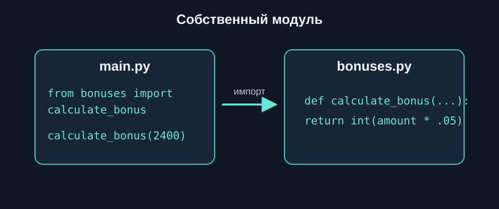
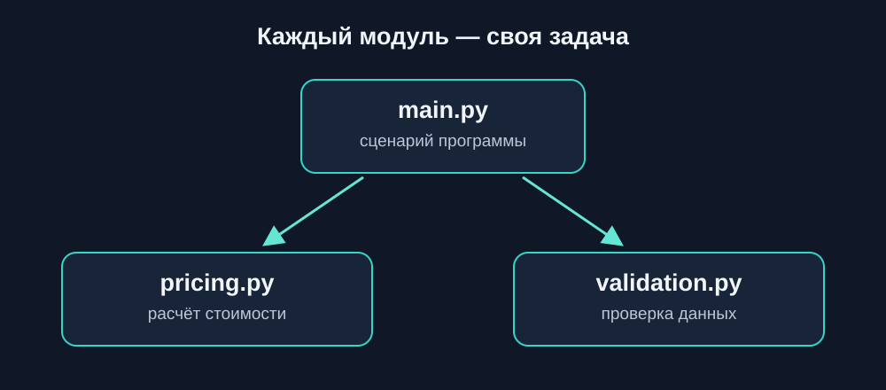
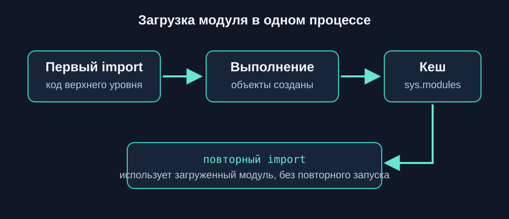
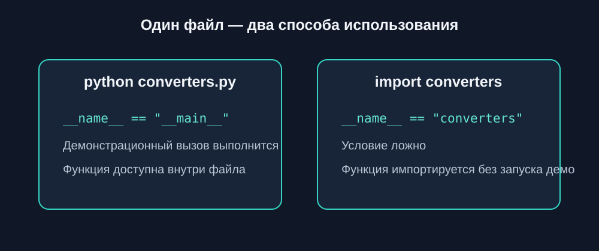
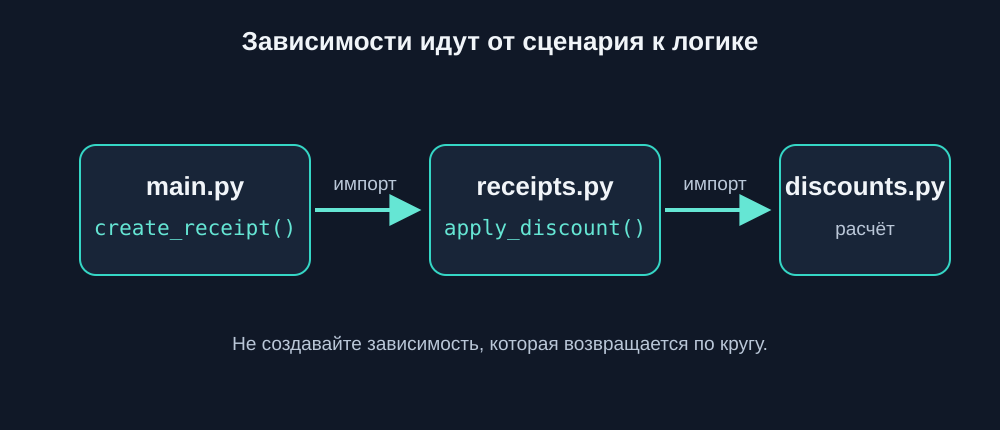

4.9 Собственные модули
собственные модули Python, создание модулей Python, импорт собственных модулей, Python main.py, Python name main, организация кода Python
В предыдущей главе мы познакомились с синтаксисом импорта. Теперь применим его к своим файлам: функцию, вынесенную в модуль, можно использовать из разных частей программы без копирования.
Создание первого модуля
Представим небольшую программу для расчёта бонусных баллов.
Создадим два файла:
bonus_project/
├── main.py
└── bonuses.py
В файле bonuses.py разместим функцию:
def calculate_bonus(amount):
return int(amount * 0.05)Теперь в main.py импортируем модуль:
import bonuses
points = bonuses.calculate_bonus(2400)
print("Бонусные баллы:", points)Результат:
Бонусные баллы: 120Здесь bonuses.py — наш собственный модуль.
Python находит его по имени bonuses, а затем предоставляет доступ к функции через точку.
Сохраните оба файла в одном каталоге и запустите:
python main.pyДля этой главы важно работать именно с несколькими файлами, а не только с отдельными фрагментами кода.
Импорт функций из собственного модуля
Мы уже знакомы с конструкцией from ... import.
Она работает и с собственными модулями.
Создадим файл formatters.py:
def format_price(price):
return f"{price:.2f} ₽"
def format_username(name):
return name.strip().title()В main.py:
from formatters import format_price, format_username
print(format_price(1499.5))
print(format_username(" анна "))Результат:
1499.50 ₽
АннаТеперь функции форматирования можно использовать в разных частях проекта.
При этом основная программа не содержит их реализацию.
Разделение ответственности

Когда программа растёт, удобно группировать функции по назначению.
Например:
shop/
├── main.py
├── pricing.py
└── validation.pyВ pricing.py:
def calculate_total(price, quantity):
return price * quantityВ validation.py:
def validate_quantity(quantity):
if quantity <= 0:
raise ValueError(
"Количество должно быть положительным"
)В main.py:
from pricing import calculate_total
from validation import validate_quantity
try:
quantity = 3
validate_quantity(quantity)
total = calculate_total(1200, quantity)
except ValueError as error:
print("Ошибка:", error)
else:
print("Стоимость заказа:", total)Результат:
Стоимость заказа: 3600Каждый файл решает свою задачу:
main.pyуправляет выполнением программы;pricing.pyсодержит расчёты;validation.pyпроверяет данные.
Такой подход помогает изменять одну часть программы, не смешивая её с остальными.
Что происходит при импорте модуля
Рассмотрим файл messages.py:
print("Модуль messages загружен")
def show_message(text):
print("Сообщение:", text)Теперь main.py:
import messages
messages.show_message("Добро пожаловать")Результат:
Модуль messages загружен
Сообщение: Добро пожаловатьПочему появилась первая строка?
При первом обычном импорте Python выполняет код верхнего уровня модуля.
А тело функции выполняется только при её вызове.
Это означает, что инструкции вне функций могут запускаться даже тогда, когда мы хотели просто импортировать готовую функцию.
Не размещайте без необходимости input(), тестовые запуски или изменение данных на верхнем уровне переиспользуемого модуля.
Такие действия могут неожиданно выполняться при его импорте.
Повторный импорт

В рамках одного процесса Python обычно сохраняет уже загруженный модуль.
Например:
import messages
import messagesПри обычном повторном импорте код верхнего уровня не выполняется заново.
Python использует уже загруженный модуль из своего кеша.
Это поведение важно учитывать, если в модуле есть инструкции, которые выполняются при загрузке.
Конструкция name == “main”

Иногда нужно, чтобы один и тот же файл можно было:
- запускать как самостоятельную программу;
- импортировать без запуска демонстрационного кода.
Для этого используется:
if __name__ == "__main__":Создадим converters.py:
def celsius_to_fahrenheit(celsius):
return celsius * 9 / 5 + 32
if __name__ == "__main__":
print(celsius_to_fahrenheit(20))При прямом запуске:
python converters.pyРезультат:
68.0Но если создать main.py:
from converters import celsius_to_fahrenheit
print(celsius_to_fahrenheit(30))Результат будет:
86.0Демонстрационный вызов с числом 20 при импорте не выполнится.
Как работает name
Python автоматически определяет специальную переменную __name__.
Её значение зависит от способа запуска файла.
| Сценарий | Значение __name__ |
|---|---|
| Прямой запуск файла | "__main__" |
Обычный импорт converters |
"converters" |
Поэтому проверка:
if __name__ == "__main__":позволяет отделить код самостоятельного запуска от функций, предназначенных для импорта.
Функции размещайте отдельно, а демонстрационный запуск — внутри блока:
if __name__ == "__main__":
...Так модуль удобно использовать и самостоятельно, и в других программах.
Импорт между файлами проекта

Рассмотрим программу обработки заказов:
orders_project/
├── main.py
├── discounts.py
└── receipts.pyФайл discounts.py:
def apply_discount(price, percent):
return price * (1 - percent / 100)Файл receipts.py:
from discounts import apply_discount
def create_receipt(product, price, discount):
final_price = apply_discount(price, discount)
return {
"product": product,
"total": final_price
}Файл main.py:
from receipts import create_receipt
receipt = create_receipt(
"Клавиатура",
2500,
10
)
print(receipt)Результат:
{'product': 'Клавиатура', 'total': 2250.0}Обратите внимание: модуль receipts.py сам импортирует функцию из discounts.py.
Таким образом, модули могут использовать друг друга.
Но не стоит создавать запутанные цепочки зависимостей без необходимости.
Общие данные в модуле
Модуль может содержать не только функции, но и константы.
Например, settings.py:
APP_NAME = "Task Manager"
MAX_TASKS = 100
DEFAULT_LANGUAGE = "ru"В main.py:
import settings
print(settings.APP_NAME)
print(settings.MAX_TASKS)Результат:
Task Manager
100Имена констант обычно записывают заглавными буквами.
Это соглашение показывает, что значение не предполагается изменять во время работы программы.
При этом Python технически не запрещает присвоить такой переменной новое значение.
Как выбирать имена модулей
Имя файла должно объяснять его назначение.
Хорошие примеры:
pricing.py
validation.py
formatters.py
notifications.pyМенее удачные:
utils2.py
everything.py
my_code.pyДля имён модулей обычно используют строчные буквы и при необходимости подчёркивания.
Не стоит называть собственные файлы именами стандартных модулей:
random.py
math.py
datetime.pyЭто может привести к конфликтам при импорте.
Типичные ошибки
ModuleNotFoundError
Если файл отсутствует в доступных путях импорта:
import missing_modulePython может сообщить:
ModuleNotFoundErrorПроверьте имя файла и расположение модулей.
ImportError
Если модуль существует, но нужного имени в нём нет:
from bonuses import unknown_functionВозникнет ImportError.
Код запускается при импорте
Если в модуле находятся инструкции верхнего уровня:
print("Тестовый запуск")они выполняются при первой загрузке модуля.
Для демонстрационного кода используйте защитную конструкцию с __name__.
Циклические импорты
Представим:
a.py импортирует b.py
b.py импортирует a.pyТакая зависимость может привести к ошибкам из-за частично инициализированных модулей.
В небольших проектах лучше разделять общую логику так, чтобы файлы не зависели друг от друга по кругу.
Подробную организацию зависимостей изучим позже.
Что важно запомнить
Собственный модуль — обычный .py-файл, код которого можно использовать в другом файле.
Например:
import bonusesили:
from bonuses import calculate_bonusПри первом обычном импорте Python выполняет код верхнего уровня модуля.
Конструкция:
if __name__ == "__main__":
...помогает отделить самостоятельный запуск от импорта.
Главная идея:
Разделяйте программу на модули по назначению, а не просто ради увеличения количества файлов.
Практические задания
Задание 1. Модуль приветствий
Сложность: начальная
Создайте два файла:
greetings_project/
├── main.py
└── greetings.pyВ greetings.py напишите функцию greet(name), которая возвращает строку приветствия.
В main.py импортируйте функцию и выведите приветствие для пользователя "Мария".
greetings.py:
def greet(name):
return f"Привет, {name}!"main.py:
from greetings import greet
print(greet("Мария"))Результат:
Привет, Мария!Задание 2. Модуль конвертации времени
Сложность: начальная
Создайте модуль time_utils.py с двумя функциями:
hours_to_minutes(hours);days_to_hours(days).
В main.py используйте обе функции для преобразования 3 часов и 2 дней.
time_utils.py:
def hours_to_minutes(hours):
return hours * 60
def days_to_hours(days):
return days * 24main.py:
import time_utils
print(time_utils.hours_to_minutes(3))
print(time_utils.days_to_hours(2))Результат:
180
48Задание 3. Настройки приложения
Сложность: начальная
Создайте модуль config.py, содержащий:
APP_NAME = "Study Planner"
VERSION = "1.0"
MAX_USERS = 50В main.py импортируйте модуль и выведите информацию о приложении.
config.py:
APP_NAME = "Study Planner"
VERSION = "1.0"
MAX_USERS = 50main.py:
import config
print("Приложение:", config.APP_NAME)
print("Версия:", config.VERSION)
print("Лимит пользователей:", config.MAX_USERS)Задание 4. Модуль проверки оценок
Сложность: средняя
Создайте модуль grades.py.
В нём должна быть функция validate_grade(grade).
Она проверяет, что оценка находится в диапазоне от 1 до 5.
Если значение некорректно, функция создаёт ValueError.
В main.py проверьте несколько оценок и обработайте исключения.
grades.py:
def validate_grade(grade):
if grade < 1 or grade > 5:
raise ValueError("Оценка должна быть от 1 до 5")
return grademain.py:
from grades import validate_grade
grades = [5, 3, 8, 2]
for grade in grades:
try:
print("Оценка:", validate_grade(grade))
except ValueError as error:
print("Ошибка:", error)Задание 5. Самостоятельный запуск модуля
Сложность: средняя
Создайте модуль temperature.py.
В нём реализуйте функцию:
fahrenheit_to_celsius(fahrenheit)Добавьте проверку __name__ == "__main__" для демонстрационного расчёта.
В отдельном main.py импортируйте функцию и вызовите её с другим значением.
Убедитесь, что демонстрационный код не запускается при импорте.
temperature.py:
def fahrenheit_to_celsius(fahrenheit):
return (fahrenheit - 32) * 5 / 9
if __name__ == "__main__":
print(fahrenheit_to_celsius(68))main.py:
from temperature import fahrenheit_to_celsius
print(fahrenheit_to_celsius(86))При прямом запуске temperature.py:
20.0При запуске main.py:
30.0Задание 6. Обработка результатов соревнования
Сложность: средняя
Создайте проект:
competition/
├── main.py
├── scoring.py
└── formatting.pyВ scoring.py напишите функцию для расчёта общего количества очков участника.
В formatting.py — функцию формирования строки результата.
В main.py используйте обе функции для вывода результатов нескольких участников.
scoring.py:
def total_score(scores):
return sum(scores)formatting.py:
def format_result(name, score):
return f"{name}: {score} очков"main.py:
from scoring import total_score
from formatting import format_result
participants = {
"Анна": [8, 9, 10],
"Игорь": [7, 8, 9],
"Мария": [10, 10, 9]
}
for name, scores in participants.items():
total = total_score(scores)
print(format_result(name, total))Задание 7. Система складского учёта
Сложность: повышенная
Создайте проект:
warehouse/
├── main.py
├── inventory.py
└── validation.pyВ inventory.py реализуйте функцию remove_stock(stock, product, quantity).
В validation.py — проверку положительного количества товара.
Программа должна:
- Проверять корректность количества.
- Проверять наличие товара.
- Проверять достаточный остаток.
- Уменьшать остаток только после успешных проверок.
- Обрабатывать ожидаемые ошибки в
main.py.
validation.py:
def validate_quantity(quantity):
if type(quantity) is not int or quantity <= 0:
raise ValueError("Количество должно быть положительным целым числом")inventory.py:
from validation import validate_quantity
def remove_stock(stock, product, quantity):
validate_quantity(quantity)
if product not in stock:
raise ValueError("Товар не найден")
if stock[product] < quantity:
raise ValueError("Недостаточный остаток")
stock[product] -= quantitymain.py:
from inventory import remove_stock
stock = {
"Ноутбук": 5,
"Мышь": 12
}
try:
remove_stock(stock, "Ноутбук", 2)
except ValueError as error:
print("Ошибка:", error)
else:
print("Остатки:", stock)Задание 8. Мини-проект: управление задачами
Сложность: повышенная
Создайте приложение:
task_manager/
├── main.py
├── tasks.py
├── validation.py
└── reports.pyТребования:
validation.pyпроверяет название задачи;tasks.pyдобавляет задачи в список;reports.pyформирует текстовый отчёт;main.pyуправляет выполнением программы.
Добавьте несколько задач, обработайте некорректные названия и выведите итоговый отчёт.
validation.py:
def validate_title(title):
if not isinstance(title, str) or not title.strip():
raise ValueError("Название задачи не может быть пустым")tasks.py:
from validation import validate_title
def add_task(tasks, title):
validate_title(title)
tasks.append({
"title": title.strip(),
"completed": False
})reports.py:
def create_report(tasks):
lines = []
for task in tasks:
status = "Готово" if task["completed"] else "В работе"
lines.append(f"{task['title']} — {status}")
return "\n".join(lines)main.py:
from tasks import add_task
from reports import create_report
tasks = []
titles = [
"Изучить модули",
"",
"Написать программу",
"Проверить код"
]
for title in titles:
try:
add_task(tasks, title)
except ValueError as error:
print("Ошибка:", error)
print("\nОтчёт:")
print(create_report(tasks))Что дальше?
Теперь мы умеем создавать собственные модули и объединять несколько Python-файлов в одну программу.
Но что произойдёт, когда количество модулей вырастет до нескольких десятков?
Хранить все файлы в одном каталоге станет неудобно.
В следующей главе — «Пакеты» — разберём, как объединять связанные модули в более крупные структуры проекта.
Собственные модули Python: краткое резюме
Собственный модуль Python — это файл .py, содержащий функции, константы и другие объекты, которые можно импортировать в другие части программы.
Для подключения собственных модулей используются знакомые конструкции import и from ... import. При первой обычной загрузке модуля Python выполняет его код верхнего уровня, поэтому демонстрационные действия удобно помещать под проверку if __name__ == "__main__":.
Разделение программы на несколько модулей позволяет организовать код по назначению, уменьшить дублирование и упростить повторное использование функций. Это важный шаг от отдельных учебных скриптов к полноценным Python-проектам.